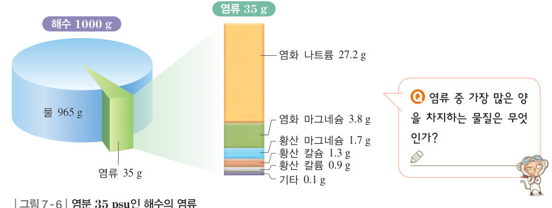
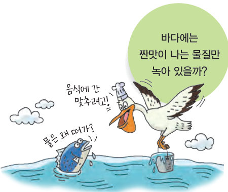
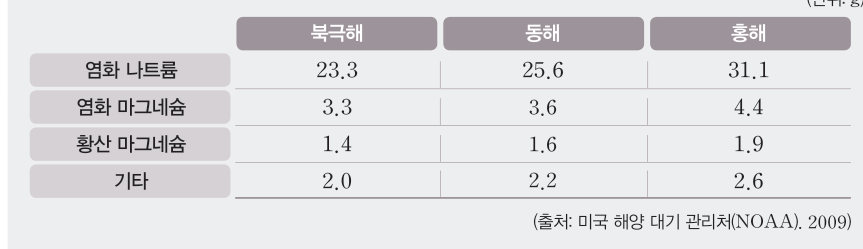

바다에는 짠맛이 나는 물질만 녹아 있을까? 해수 1000 g을 가상으로 증발시켜 남는 염류를 살펴보고, 북극해·동해·홍해의 자료로 염분과 염화 나트륨의 비율을 계산해 염분비 일정 법칙을 찾은 뒤, 염분 조절기로 염분을 바꾸는 요인을 알아보자.
해수가 짠맛이 나는 것은 해수에 녹아 있는 물질 때문이다. 해수에는 여러 가지 물질이 녹아 있는데, 이를 염류라고 한다. 해수에 녹아 있는 염류에는 짠맛을 내는 염화 나트륨과 쓴맛을 내는 염화 마그네슘이 있으며, 그 밖에도 황산 마그네슘과 황산 칼슘 등이 포함되어 있다.
해수 1000 g에 녹아 있는 염류의 총량을 g 수로 나타낸 것을 염분이라고 한다. 염분의 단위는 실용염분단위(psu)이며, 전 세계 해수의 평균 염분은 35 psu이다. (실용염분단위는 15 ℃, 1 기압 상태에서 해수에 전류를 흘려보내 측정하며, 그 값은 해수 1000 g에 포함된 염류의 총량(g)과 거의 일치한다.)

| 해역 | 염분(psu) | 염화 나트륨 비율(%) |
|---|---|---|
| 북극해 | ||
| 동해 | ||
| 홍해 |
염분은 증발량과 강수량의 차이, 흘러드는 담수의 양, 해수가 얼거나 빙하가 녹는 정도 등의 영향을 받는다. 증발량이 강수량보다 많은 곳은 염분이 높고, 하천수나 지하수가 흘러들거나 빙하가 녹는 곳은 염분이 낮다. 따라서 전 세계 해수의 염분은 해역에 따라 다르게 나타난다.
| ㉠ 강수량보다 증발량이 많은 곳(예: 홍해, 사막 주변 바다) | |
| ㉡ 하천이나 지하수가 흘러드는 곳 | |
| ㉢ 바다가 어는 곳 | |
| ㉣ 빙하가 녹는 곳 |
| 평가 기준 | 스스로 평가 |
|---|---|
| 염분의 뜻을 알고 염분을 계산할 수 있다. | |
| 염분비 일정 법칙을 자료로 설명할 수 있다. | |
| 염분에 영향을 주는 요인을 설명할 수 있다. |